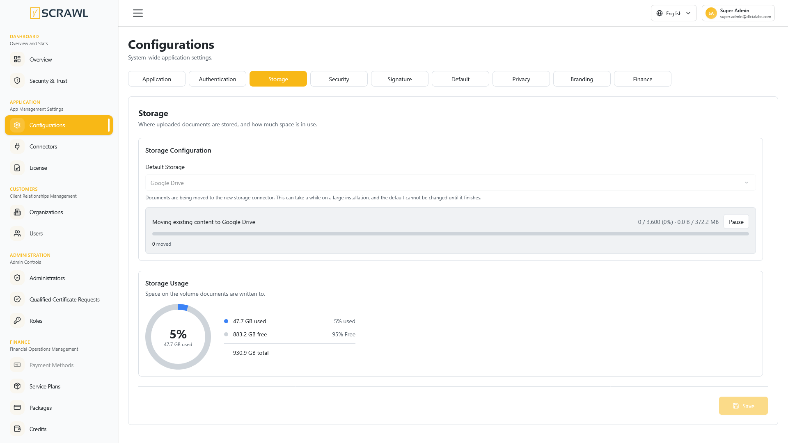

Storage
The Storage screen decides where uploaded documents are kept, and shows how much room is left where they are kept.

Storage Configuration
- Default Storage – the connector documents are written to.
Every option in this dropdown is a Storage connector, including the platform's own volume, which is seeded as a connector named Server Storage. There is no separate storage type or path on this screen any more: where a place is and how it is reached — its directory, its OAuth application, its folder — all belong to the connector. See Add Connectors for how to add one.
Only connectors that are Active and whose last health check passed are offered. A connector that has been switched off, or that failed its last check, is not something documents should be sent to.
Changing the default moves what is already stored
Changing this setting does two things, not one:
- New documents are written to the connector you chose.
- Everything already stored — documents and templates — is moved to it in the background.
A default that only applied to future documents would leave the installation reading from two places indefinitely, which is never what choosing a new storage was meant to mean.
Because this is a large operation, the screen asks first:
Move everything to Google Drive? New documents will be stored there, and everything already stored — documents and templates — will be moved across in the background. On a large installation this can take a while. The default storage cannot be changed again until the move finishes.
Select Change and move to start, or Cancel to leave the setting as it was.
While content is being moved
A progress panel appears under the selector and stays until the move finishes.
- How far along – items completed out of the total, as a percentage, and the same figure in size:
1,508 / 31,455 (5%) · 684.9 MB / 3.4 GB. Item counts alone can mislead — an installation with many records but little content reads as far bigger than it is. - moved – content copied to the new connector, verified, and removed from the old one.
- skipped (no content found) – the record exists but there is no file behind it on the old connector. Nothing was lost and nothing was moved. A large number here is worth investigating: it means that many records point at content that is not there, and it was true before the move started.
- retrying – the item failed for a reason that was not its own, such as a service restarting mid-move, and will be tried again shortly. It is not counted as finished, so the bar cannot reach 100% while work is outstanding.
- failed – tried the maximum number of times and could not be moved. The content is untouched and still on the old connector.
Pause and Resume
Use Pause to stop the move — during a busy period, or because the wrong connector was chosen. Pausing is safe at any moment: each document is copied, verified, and only then removed from the old place, so a document is always in one place or the other and never in neither.
Resume starts it again from where it stopped.
Choosing a different connector after pausing
While the move is paused, the Default Storage selector is unlocked so a different connector can be chosen. The paused move is discarded and a new one starts from wherever the content is now — including anything already moved to the connector you are moving away from, which is emptied first.
This is the way out of a wrong choice. It can be done more than once.
While the move is running, the selector is locked. The rule is enforced by the server as well as the screen, so it cannot be worked around by calling the API directly: a move carrying documents to one connector while new documents start going to a third leaves nobody able to say where anything is meant to be.
Storage Usage
The Storage Usage panel reports space where the currently selected connector keeps documents, so the figures change when the default storage changes.
- A donut chart with the proportion in use.
- Used, Free and Total space, scaled to a sensible unit — MB for a fraction of a gigabyte, TB for a large volume.
The donut changes colour as the space fills up, so the state is visible without reading the numbers:
| Used space | Colour |
|---|---|
| Up to 60% | Blue — healthy |
| Above 60% and up to 85% | Amber — keep an eye on it |
| Above 85% | Red — free up space or extend the volume |
Note: What the figures describe depends on the connector. For Server Storage it is the volume the platform runs on. For Google Drive or Dropbox it is the whole connected account — including whatever else lives in that account, not only the documents vScrawl put there. The panel says which account it is reporting on.
Some providers cannot report usage at all. A Dropbox connector authorised before the
account_info.readpermission was granted to its application is one such case; the panel simply omits the figures rather than showing zero.